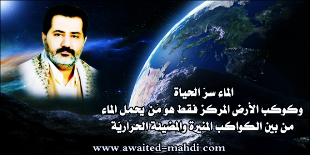

http://www.the-greatnews.com/showthread.php?p=240057
الذهاب الى الرابط
صورة:
{kind=link}
http://www.mediafire.com/convkey/3f28/pnpvu35lrnhrjqr7g.jpg

رابط الصورة في الموقع
[ لمتابعة رابط المشاركـــــــــــــة الأصليّة للبيــــــــــــــان ]
الإمام ناصر محمد اليماني
16 - 01 - 1438 هـ
17 - 10 - 2016 مـ
07:20 صباحاً
( بحسب التقويم الرسمي لأمّ القرى )
ــــــــــــــــــــ
الماء سرّ الحياة، وكوكب الأرض المركز فقط هو مَنْ يحمل الماء من بين الكواكب المنيرة والمضيئة الحراريّة ..
بسم الله الرحمن الرحيم، والصلاة والسلام على محمدٍ رسول الله وجميع المؤمنين في الأوّلين وفي الأخرين إلى يوم الدين، أمّا بعد..
السلام عليكم ورحمة الله وبركاته أحبتي الأنصار السابقين الأخيار، وإنّي أرى بعضاً منكم يتجادلون في أنفاق الكواكب كي يثبتوا نفقاً في الأرض فيه حياةٌ، فمن ثمّ يرد عليكم الإمام المهديّ ناصر محمد اليماني وأقول: لا يهمّ تشابه الكواكب في ليلها ونهارها وكرويّتها؛ بل يهمّنا وجود الحياة، فهل لو يُذهب الله الماء من أرضكم فهل ترون استمرار الحياة؟ فحتماً يموت النبات فتصبح الأرض التي ليس بها ماء ميّتةً كمثل الكواكب الأخرى ميّتةً من الحياة.
وتنقسم الكواكب إلى كواكب مضيئةٍ وكواكب منيرةٍ برغم تشابهها في التكوير والتدوير مع اختلاف حجمها وسرعة دورانها، ولكنّ الفرق كبيرٌ بين النور والضياء، فهل يستوي نور القمر وضياء الشمس برغم تشابههما في التكوير؟ ولكنّ الفرق كبيرٌ في الحجم وفي ذات الكوكب كون الكواكب المضيئة ناريّة والكواكب المنيرة عاكسةً لضوء الكواكب المضيئة.
وبالنسبة للبحار والأنهار فلا وجود لها في الكواكب المنيرة جميعاً عدا كوكب الأرض الأمّ التي تحمل البحار والأنهار والينابيع، ونعم توجد مشاركةٌ لوجود الحياة في الأرض الأمّ بسبب قرب الشمس التي تُبخّر البحر فتتكون السحب الثقال المليئة بالبخار ويتكثّف البخار إلى ماءٍ باردٍ أو ثلجيٍّ، ويعود ذلك لسرعة الرياح التي تسوق السحاب ويعود الثلج إلى كثافة السحب وتراكمها، فقد يتحوّل الماء فيها إلى جبالٍ من بَرَدٍ فيتحوّل إلى عذابٍ يُصيب به من يشاء ويَصرفه عمّن يشاء. ولكن حبيبات البَرَد لا خطر منها على البشر، ولكن إذا تحوّل الوَدْقُ إلى جبالٍ من بَرَد فهذا عذابٌ قاتلٌ ويصبح مطر سَوْءٍ قاتلٍ، كون الجبال سوف تصل إلى الأرض كشظايا كبيرةٍ قاتلةٍ لولا رحمة الله بعباده ومخلوقاته البريّة.
وعلى كل حالٍ، تالله لا أجد في كتاب الله القرآن العظيم أيَّ كوكبٍ يحمل الماء المالح والفُرات والمطر والشجر إلا كوكب الأرض الرتْق الأمّ مركز الكون الفضائيّ التي أخرج منها ماءها ومرعاها، وتوجد حياةٌ في ظاهرها وباطنها. وأمّا الكواكب الأًخَرْ فلا ترون بحار الماء المالح والعذب الفرات على سطحها، ولا ترون غابات الأشجار، ولا ترون بشراً ولا أيَّ مخلوقٍ حيٍّ يدأب على سطح أيّ كوكبٍ في الفضاء ما عدا الأرض الأمّ مركز الكون. ونعلم علم اليقين بهذه الحقيقة العلميّة من خلال رمز الماء لكوكب الأرض الأمّ في الكتاب ذلك كوكب الرتْق الذي تحيون عليه؛ بل حتى سطحه حيث لا وجود للماء لا تجدون الحياة والقصور كالصحارى الصَّلْد الرمليّة التي لا تُمسك ماءً ولا تُنبت كَلأً، ويعود ذلك لنوع تضاريس الصحراء وقشرتها كون منها ما تُنبت الكَلأ إذا ارتوت بالمطر فترونها تبطئ الأشجار المخضرة فيها أكثر من الوديان بالشعاب، وليس أنّ ذلك بسبب قرب الماء بل أصبح ماؤها غوراً، وإنما السبب في أنّ الشجر يُبطئ مخضراً بسبب أنّ الرياح تأتي بالتراب على اليابسة فيكوّن طبقةً ترابيّةً على التربة المخضرّة مما يحمي التربة المخضرّة من حرارة الشمس زمناً أطول من الوديان والجبال، ويعلم بذلك ساكني أطراف الصحارى وهم البدو الرُّحَّل.
وعلى كل حالٍ حتى لا نخرج عن الموضوع فنقول: ليس برهان الحياة وجود النفق بالكوكب؛ بل وجود الماء. ولذلك ترون لون الأرض الأمّ زرقاء من الفضاء بسبب بحارها العظمى ولكن الكواكب الأخر لا يوجد بها البحار والأنهار. فلا يفتنكم عن الذكر الذين يتّبعون الظنّ من علماء الفضاء فما نطقوا به من الحقّ نجده بالحقّ في الكتاب مثلما ينطقون به من العلم الحقّ، وما خالف القرآن من علمهم فهو باطلٌ وقولٌ بالظنّ من عند أنفسهم، والظنّ لا يغني من الحقّ شيئاً. فلكم زعموا بوجود ماءٍ بالقمر وعالَمٍ بالعهد القديم حتى إذا وصلوا إليه لم يجدوا فيه شيئاً! وكذلك المريخ زعموا أنّ فيه بحارٌ وأنهارٌ ثم لم تجد مسابرهم الفضائيّة فيه شيئاً! فكم يكلّفهم الوصول إلى معرفة تلك الحقيقة؟ مليارات الدولارات!! ولو أنّهم استمعوا إلى صاحب علم الكتاب لأفتاهم بالحقّ الحقيق على الواقع الحقيقي لا شكّ ولا ريب بإذن الله وليس مجرد قول بالظنّ الذي لا يغني من الحق شيئاً.
وأمّا المسلمون، فللأسف إذ لا يزال منهم من يعتقد بخزعبلات المفسرين في القرون من الذين يقولون على الله ما لا يعلمون أنّ الأرض على قرن ثورٍ! وفضحوا أنفسهم وأمّتهم من الذين يتّبعونهم اتّباع الأعمى، فيقول: "ذلك قول علمائنا الأولين، وهم أعلم وأحكم". أولئك كالأنعام؛ بل هم أضلّ سبيلاً وخزيٌّ وعارٌ على أمّتهم وَصَدُّوا عن القرآن العظيم بسبب قولهم على الله ما لا يعلمون، كون الكافرين يظنون أنّ هؤلاء يعتقدون بما قيل في القرآن فزاد الكفار بِه كفرا برغم أنّ تفاسيرهم من عند أنفسهم ولم يستنبطونه من قول ربهم في القرآن العظيم، ومن أصدق من الله قيلا؟
ألا والله الذي لا إله غيره لا يعجز كافةُ الكفار والملحدين المهديّ المنتظَر شيئاً بالعلم والمنطق نستنبطه لهم من محكم القرآن العظيم، ولكن للأسف علماء المسلمين المعتصمين بتفاسيرٍ وأقاويلَ الذين يقولون على الله ما لا يعلمون أضلّوا أنفسهم وأَضَلُّوا أمّتهم من الأَنْعَام الذين لا يتفكّرون بعقولهم بل يقولون: "إذا صدّق علماؤنا بعلم ناصر محمد اليماني واعترفوا بعلمه وصدّقوا أنّه المهديّ المنتظَر صدّقنا ناصر محمد اليماني واتّبعناه، وإن كذّبوا كذّبناه". فمن ثمّ يردّ عليهم الإمام المهديّ ناصر محمد اليماني وأقول:
أقسم بمن أجرى السحاب بالرياح -وليس أنه أجراها بالملائكة كما يزعم في تفاسيرهم المفترون على الله ما لا يعلمون- لو أنه يتّبعني العالمين لعلّمناهم بما قد أحاطهم الله به علماً ثم نزيدهم علماً كثيراً بما لم يكونوا يعلمون، فلن يغني عنكم علماؤكم يا معشر المسلمين الأنعام المعرضين عن دعوة الإمام الحقّ من ربهم المُصطفى من ربّ العالمين، وما جعلكم الله أن تصطفوا خليفته في الأرض من دونه، قاتلكم الله أنّى تؤفكون، فمنكم خرجت الفتنة وتفرّقت أمّتكم إلى أحزابٍ يضرب بعضهم رقاب بعضٍ، معرضين عن دعوة الاحتكام إلى كتاب الله القرآن العظيم وسنّة رسوله الحقّ، ألا والله لا هم على كتاب الله ولا سنّة رسوله الحقّ؛ بل معتصمين بسنن الشيطان الرجيم وعضّوا عليها بالنواجذ حتى يَرَوْا العذاب الأليم، فيقولون: {رَّبَّنَا اكْشِفْ عَنَّا الْعَذَابَ إِنَّا مُؤْمِنُونَ ﴿١٢﴾} [الدخان :12]، أو يأتيهم عذابٌ دون ذلك، ولكنّ أكثرهم لا يعلمون.
ألا والله إنّ في هذا القرآن خبركم وخبر مَنْ كان قبلكم ونبأ مَنْ بعدكم، ألا ترون أنّ الإمام المهديّ ناصر محمد اليماني يكتب لكم نشرات الأخبار من قبل الحدث بآياتٍ بيّناتٍ وآياتٍ مبيّناتٍ وآياتٍ محكماتٍ وآياتٍ مفصّلاتٍ؟ وأعلم من الله ما لا تعلمون ... ولذلك تجدون بيانات الإمام المهديّ ناصر محمد اليماني نشرات أخبارٍ من قبل حدوثها على الواقع ومن قبل أن تسمعونها في قنوات الأخبار.
ولولا أن يتّهمني الأحزاب ظلماً وزوراً بالتّحيّز وأخرى تغضب فيؤذون الأنصار في مختلف الأقطار لفصّلت لكم بإذن الله كلّ شيءٍ تفصيلاً حتى تروا كأنّ هذا القرآن تنزّل اليوم على قلوبكم، برغم أنّكم تعلمون أنّه تنزّل قبل أكثر من ألف وأربعمائة وأربعين عاماً، ولسوف نثبت بالبرهان المبين غباءَ وعَمى علماءِ المسلمين الذين يحسبون أنفسهم علماء؛ بل أصحاب الاتّباع الأعمى.
ألا والله لو كُنتُم لا تزالون على الهدى لما بعث الله الإمام المهديّ ناصر محمد اليماني ليهديكم بعد ضلالكم ولكنكم تريدون مهديّاً منتظراً متبِعاً لأهوائكم، وهيهات هيهات! فوربّ الأرض والسماوات إنّنا نرفق بعقولكم الصغيرة ونظرتكم القصيرة وأسكت عن أشياء حتى تزعموا أنّي أتّبعكم فيها إلى حينٍ ثم ننسفها نسفاً بمحكم القرآن العظيم بإذن الله ربّ العالمين، سبحان ربي لا علم لي إلا ما علّمني إنّ ربّي على صراطٍ مستقيمٍ لمن أراد أن يهتدي إلى صراط العزيز الحميد فليعتصم بالبيان الحقّ للقرآن المجيد؛ بالبيان الحقّ للقرآن بالقرآن وليس بقرآنٍ جديدٍ.
وأُشهد الله أن لا تقبلوا من ناصر محمد اليماني قولاً جديداً لم يقلْه الله في محكم القرآن العظيم شرطاً علينا غير مكذوبٍ أن يكون البيان للقرآن بالقرآن واضحاً كوضوح الشمس في السماء لعلماء الأمّة وعامتهم لا ينكره إلا الأعمى أو شيطانٌ رجيمٌ تبيّن له أنّ الحقّ نظرا لسلطان العلم الملجم من محكم القرآن العظيم فأخذته العزّة بالإثم، فحسبه جهنم. ألا لعنة الله على كلّ شيطانٍ رجيمٍ عرف الحقّ فزاغ عنه ثم أَزَاغ الله قلوبهم ولعنهم بكفرهم بما هم به مؤمنون، والعاقبة للمتقين الذين لا يريدون علواً في الأرض ولا فساداً ولا سفكاً للدماء ظلماً.
قل انتظروا إني معكم من المنتظرين، وسلامٌ على المرسلين، والحمد لله ربّ العالمين..
خليفة الله وعبده الإمام المهديّ ناصر محمد اليماني.
______________